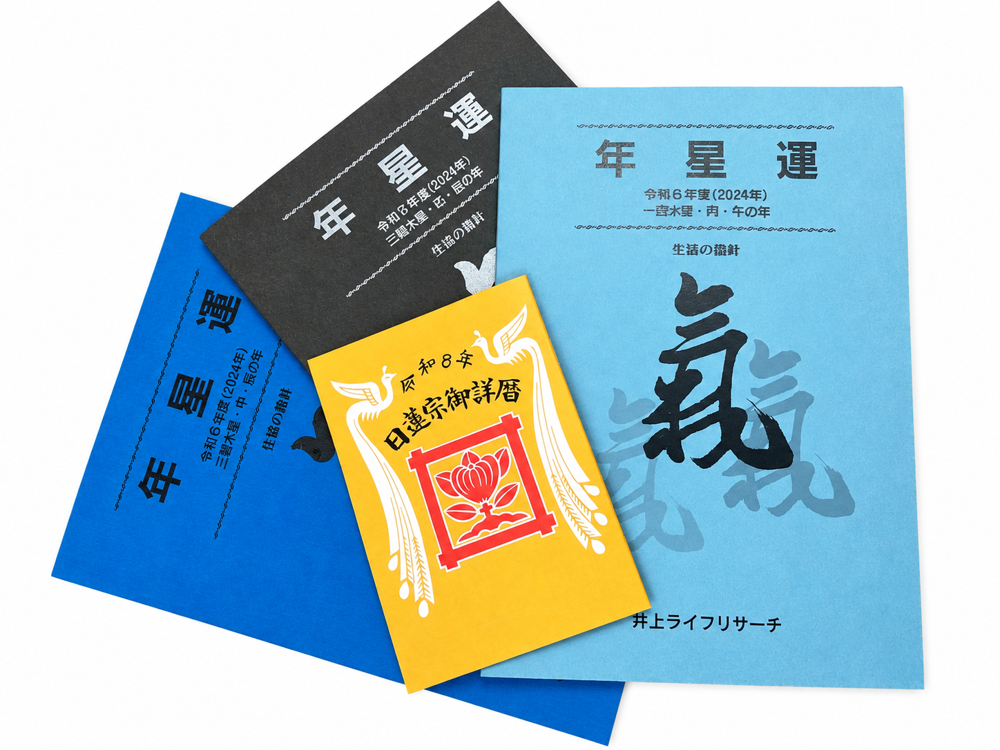
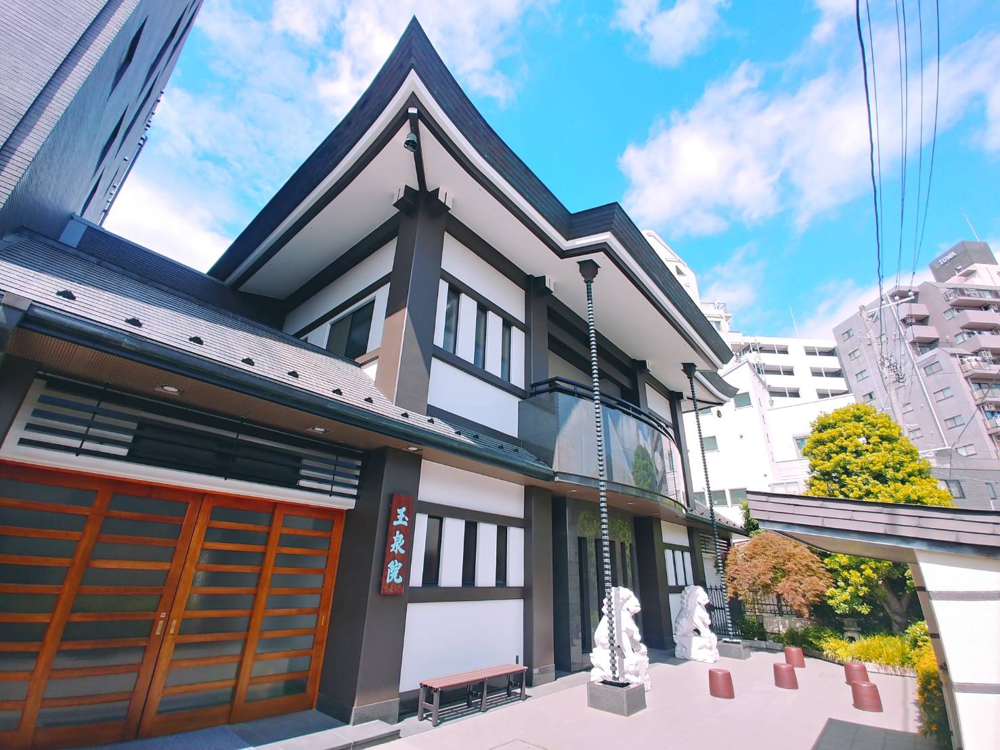
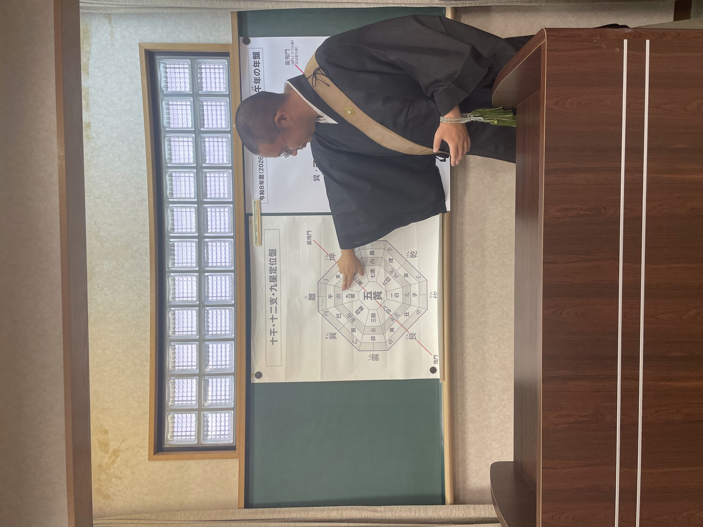

年星運＋小暦
7,000円（郵送・一冊）
会場での購入は一冊6,000円。
発送は十月中旬より随時。
年星運のお申込みは下記Googleフォームよりお願いいたします。
年星運のお申し込み
令和九年度 九紫火星・丁・未
九星気学に基づく年ごとの運気「年星運」は、経営や組織運営における意思決定に、静かな指針を与えます。長晶山玉泉院より、令和九年 九紫火星・丁（ヒノト）・未（ひつじ）・天河水（てんかすい）の年星運をお届けいたします。
合掌 時下益々ご清栄の事とお慶び申し上げます。 さて、本年は『一白水星丙午』の年、暗剣殺・歳破同会の激動の年回り、ホルムズ海峡封鎖による石油危機、熊本地震、ネパールでの鉄砲水、各地での大雨等、一白水星の液体を象徴する出来事が起きおります。何事にも水のような柔軟性が求められる本年、改めて気を引き締めて参りましょう。 さて、本年も関係各位のお力添えを頂きまして、 来年令和九年『九紫火星 丁（ヒノト）未（ひつじ）年の年星運』が完成し、更に本年十月より『令和九年度九紫火星年 年星運セミナー』を開催する運びとなりました。年星運並びにセミナーは、本ページのGoogleフォームよりお申込みいただけます。お申込みを心よりお待ちしております。 また、令和九年は、『九紫火星丁未年』良くも悪くも物事が明らかになる、見た目の華やかさに惑わされてはいけない年周りです。地に足を付けた経営が大切となります。そして混迷せる現代社会を生き抜く為に、年星運・気学セミナーを活用し、未来の指針として頂ければ幸いです。
長晶山 玉泉院 第二十九世
井上 慶亮
今を知り、今を考え、今に学ぶ
気学とは、汝自身の今を知るための学問
気の流れを掴め。光強く、隠れていたものが明らかになる。外側を飾るより内側を整え、冷静さと謙虚さが必要。
令和九年は「九紫火星」「丁（ヒノト）」「未（ひつじ）」「天河水（てんかすい）」年。混迷を極める現代、先を見据えた行動が必須です。この年星運とセミナーを未来への指針とご活用ください。

講座で得られること
九紫火星丁未の年がどのような運気で進むのかを、九星気学に基づいて詳しく解説します。経営や組織運営における重要な判断の時期を見極める指針としてお使いいただけます。
全8回の講義を、長晶山玉泉院 第二十九代住職・井上慶亮が自ら担当します。各回定員は先着25名です。
年星運・小暦は一冊の書物としてお届けします。年始だけでなく、判断に迷う場面でその都度読み返していただけます。
住職紹介
長晶山玉泉院 第二十九代住職。
気学の大家、玉泉院 第二十七代住職・井上日宏より九星気学の相伝を受ける。
先代の遷化に伴い玉泉院の法灯を受け継ぎ、九星気学を通じて人々に安穏を提供している。

各回とも 受付13時（入室は12時頃より可）／講義13時30分〜16時30分頃（後半に質疑応答）
・各回の定員は先着25名です。お早めにお申し込みください。
・駐車場がございませんので、公共交通機関にてご来場ください。
会場
〒135-0023 東京都江東区平野1-14-6 玉泉院内
地下鉄「清澄白河駅」より徒歩7分
A3出口を出て左に進み、2つ目の信号のある交差点、天ぷら膳処「片山」の手前、一方通行の表示がある道を左折。突き当りを右折し、100m先の右側です。
年星運・セミナー

7,000円（郵送・一冊）
会場での購入は一冊6,000円。
発送は十月中旬より随時。
年星運のお申込みは下記Googleフォームよりお願いいたします。
年星運のお申し込み
セミナーお申込みは下記Googleフォームよりお願いいたします。
セミナーのお申し込みお問い合わせ・郵送先 井上ライフリサーチ
〒135-0023 東京都江東区平野1-14-6 玉泉院内
TEL 03-3641-3702 ／ FAX 03-3641-5232 ／ Email kyusei334@gmail.com
お電話が不通の際は、お手数ですがFAXまたはE-mailにてお問い合わせください。